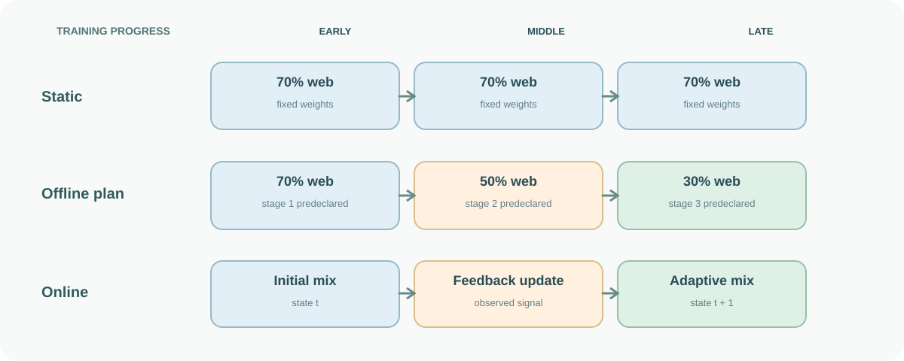
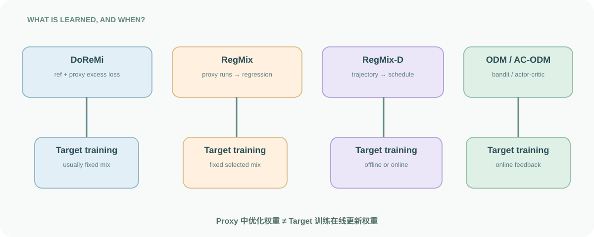
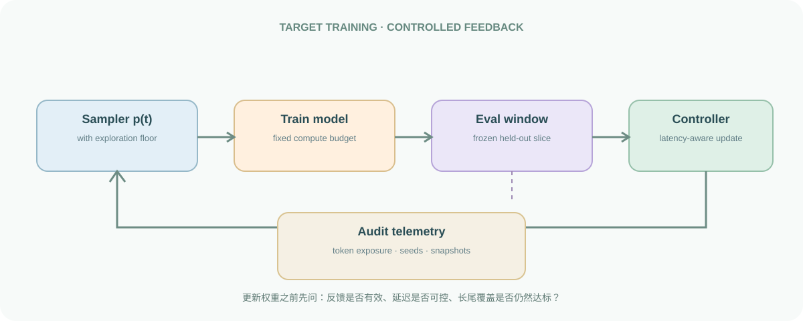

MODULE 27 / LLM DATA ENGINEERING
在线数据选择与动态配比
比较 Curriculum Learning、DoReMi、RegMix、RegMix-D、ODM 与 AC-ODM，构建带探索底座和审计日志的数据采样反馈闭环。
静态混合比例让所有训练阶段都使用同一数据源权重，但模型在早期、晚期与不同领域上的学习速度未必相同。是否应该随训练状态调节采样？关键是先区分“离线选一个比例”“离线生成阶段计划”“训练时闭环更新”，再检查反馈信号到底测量了什么。
三条时间轴：固定比例、预计算调度与在线反馈

| 方案 | 何时决定混合权重 | 训练期间使用何种信号 | 主要风险 |
|---|---|---|---|
| 静态混合 | 目标训练开始前 | 无权重更新 | 无法适配能力和分布的变化 |
| 离线 curriculum / schedule | 训练前或阶段开始前 | 按已知 step/阶段切换 | 依赖先验日程与目标设置 |
| 在线混合 | 训练中的更新时点 | 模型损失、验证集或奖励反馈 | 延迟、噪声、反馈回路不稳定 |
Curriculum Learning（Bengio et al., 2009）提出按样本难度安排训练顺序的通用思路。课程学习不要求每个算法都采用“先通用后代码”的固定三阶段配方；课程顺序可以由先验定义，也可以由模型能力驱动，而收益需要具体实验验证。
从 DoReMi、RegMix 到 RegMix-D：到底谁是在线的？

DoReMi：用代理模型的 excess loss 寻找值得加强的领域
DoReMi（NeurIPS 2023）的流程是先在基线混合上训练 reference model，再训练同尺度 proxy model，使用各领域相对于 reference 的 excess loss 作为 Group DRO 信号学习权重，最后将平均后的域权重用于目标大模型预训练。它不会简单地“给当前 loss 最高的领域最多数据”；原始 loss 高可能是噪声高，excess loss 相对参考模型才有意义。论文 proxy 内部的在线优化发生在求解配比的阶段；最终目标模型使用得到的配比，并不是自动对每个目标训练 step 做在线反馈。
RegMix：回归替代单个昂贵的目标训练实验
RegMix（ICLR 2025）采样多组配比，训练多次较小代理模型，使用回归模型预测尚未训练过的配比在指定评测指标上的表现，再为大模型选一个较好的固定配比。代理实验很有价值，但 proxy-to-target 的转移仍依赖模型尺度、tokenizer、数据分布和评测任务。
RegMix-D：从整段轨迹学习阶段性配比
RegMix-D（Findings of IJCNLP-AACL 2026）不是把 RegMix 原样换一个名字。它利用代理训练轨迹拟合不同训练阶段的混合方案，并提供两种模式：训练前生成完整调度的 offline variant，以及根据目标训练中观测到的损失进一步调整的 online variant。写课程或复现时必须记录使用的是哪一种。
ODM 与 AC-ODM：在目标训练中做自适应决策
Efficient Online Data Mixing（ODM）将数据源的抽样分配与多臂老虎机反馈联系起来，尝试在训练中更新源权重。AC-ODM（ICML 2026）进一步使用 actor-critic 网络来学习训练期间的动态数据配比与反馈。此类算法是真正的在线方法，但也引入反馈估计误差、额外状态和新的超参数。
| 方法 | 优化/估计机制 | 目标模型期间是否动态 |
|---|---|---|
| DoReMi | Reference vs proxy excess loss + Group DRO | 通常否（将学习出的配比用于目标训练） |
| RegMix | 多组 proxy 训练 + 性能回归 | 否（静态选择） |
| RegMix-D（离线） | proxy trajectory → 阶段配比表 | 随阶段变化，但不依据目标反馈 |
| RegMix-D（在线） | proxy trajectory + 目标训练 loss 反馈 | 是 |
| ODM / AC-ODM | Bandit / actor-critic feedback | 是 |
先定义你的反馈信号，再谈更新公式
为了理解动态抽样，我们构建一个与上述论文不等价的教学采样器：假设第 个领域有一个已经标准化、越高越值得额外抽样的信号 ，采用 temperature-softmax 并给所有领域保留均匀探索比例。
其中 越小，抽样越偏向分数高的领域； 为均匀探索比例； 是领域数。这个教学公式既不是 DoReMi 的 Group DRO 更新，也不是 ODM 的 bandit reward 估计器；它只展示探索与集中度的权衡，缺少反馈信号的因果定义和延迟校正。
交互实验：三个领域的权重怎样改变？
“分数”是假设已审计的规范化 utility signal（非真实论文模型 loss）；调整 temperature 和均匀探索底座，观察总权重是否保持为 100%。
from scripts.online_mix import feedback_mixture
weights = feedback_mixture(
{"web": 2.0, "code": 4.0, "math": 3.0},
temperature=1.0, exploration=0.12,
)
print(weights) # 示例规范化分数的理论配比闭环常见故障：分数噪声、延迟、短视与模式坍缩

- 时间延迟：某阶段采到的 token 对验证损失的影响可能晚于下一个配比更新窗口。频繁更新可能追逐噪声。
- 信号方向：高 loss 可能因为噪声、低资源语言或问题确实难；不一定意味着“提高比例会有收益”。
- 选择偏差：某个领域长期少采样，控制器就更难估计它的潜在价值；保留 exploration floor 是一种保护手段，不是万能保证。
- 公平与覆盖：若只追求综合分数，少数语言、罕见结构和旧能力可能受损。要制定每源/每群体的最低覆盖与回放约束。
- 可复现：记录权重时间序列、每个窗口实测 token exposure、sampler seed、验证数据版本和 controller checkpoint。实时采样日志比事后只保留最终权重更重要。
比较算法时至少设立固定静态配比、离线阶段日程和在线方案三组对照；统一模型架构、总 token budget、训练优化器、tokenizer、数据快照与评测。不要用某个论文在不同模型、不同预算上的最高分直接证明“在线永远优于静态”。
参考资料
- Bengio et al. (2009), Curriculum Learning，ICML。
- Xie et al. (2023), DoReMi，NeurIPS。
- Liu et al. (2025), RegMix: Data Mixture as Regression for Language Model Pre-training，ICLR。
- Zhao et al. (2026), RegMix-D: Dynamic Data Mixing via Proxy Training Trajectories，Findings of IJCNLP-AACL。
- Efficient Online Data Mixing For Language Model Pre-Training，ODM。
- Ma et al. (2026), AC-ODM: Actor–Critic Online Data Mixing for Sample-Efficient LLM Pretraining，ICML。